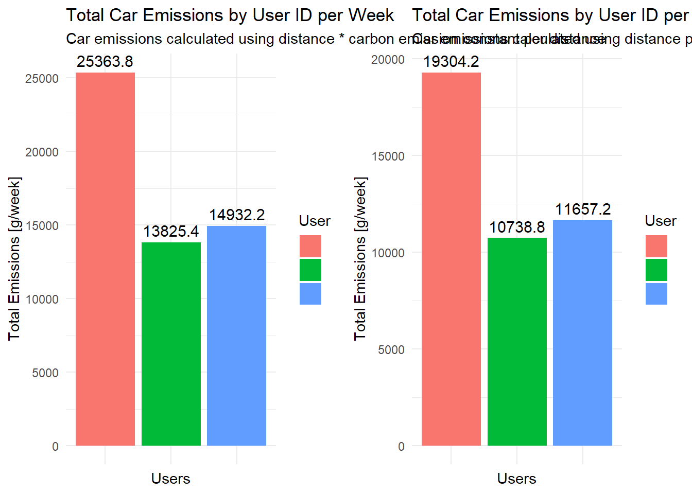
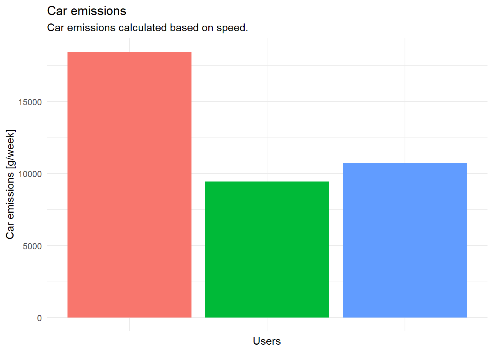

Die folgenden Objekte sind maskiert von 'package:stats':
filter, lag
Die folgenden Objekte sind maskiert von 'package:base':
intersect, setdiff, setequal, union
library("ggplot2")library("gridExtra")
Attache Paket: 'gridExtra'
Das folgende Objekt ist maskiert 'package:dplyr':
combine
library("readr")library("raster")
Lade nötiges Paket: sp
Attache Paket: 'raster'
Das folgende Objekt ist maskiert 'package:dplyr':
select
library("sf")
Linking to GEOS 3.9.3, GDAL 3.5.2, PROJ 8.2.1; sf_use_s2() is TRUE
library("terra")
terra 1.7.29
library("lubridate")
Attache Paket: 'lubridate'
Die folgenden Objekte sind maskiert von 'package:terra':
intersect, union
Die folgenden Objekte sind maskiert von 'package:raster':
intersect, union
Die folgenden Objekte sind maskiert von 'package:base':
date, intersect, setdiff, union
Abstract
Introduction
Road transportation is responsible for around 20 percent of global carbon dioxide emission whereof almost half of these emissions are caused by passenger road vehicles (Suarez et al., 2022). Due to the strongly negative impact of carbon dioxide emissions on climate change, they world widely receive gradually increasing concern (Dong et al., 2022). Driving behavior like acceleration as well as terrain characteristics such as an incline have valid impacts on carbon dioxide emissions (Dong et al., 2022; Suarez et al., 2022; Xu et al., 2022).
However, road traffic is not the only type of traffic that causes carbon dioxide emissions. Trains, trams, and – when also taking production emissions into account – even bicycles cause carbon dioxide emissions. Therefore, we will also take these transportation modes into account. In this project, we analyze carbon dioxide emissions by different transportation types using different complexity levels as well as emission scenarios and compare these different setups with each other. We use validated movement data collected by the Posmo app from XY students of the course Computational Movement Analysis in Spring 2023 at ZHAW.
Material and Methods
Preprocessing
# define a function to load the posmo dataloadPosmoData <-function(filepath){read_delim(filepath, delim =",") |># we do not need the place namesubset(select =-c(place_name)) |># remove NA values for transport mode, we need a specified transport modefilter(!is.na(transport_mode)) }
# load all validated Posmo track filesposmo1 <-loadPosmoData("data/posmo_tracks/posmo_1.csv") # Antonia
Rows: 30643 Columns: 7
── Column specification ────────────────────────────────────────────────────────
Delimiter: ","
chr (4): user_id, weekday, place_name, transport_mode
dbl (2): lon_x, lat_y
dttm (1): datetime
ℹ Use `spec()` to retrieve the full column specification for this data.
ℹ Specify the column types or set `show_col_types = FALSE` to quiet this message.
posmo2 <-loadPosmoData("data/posmo_tracks/posmo_2.csv") # Laura
Rows: 35927 Columns: 7
── Column specification ────────────────────────────────────────────────────────
Delimiter: ","
chr (4): user_id, weekday, place_name, transport_mode
dbl (2): lon_x, lat_y
dttm (1): datetime
ℹ Use `spec()` to retrieve the full column specification for this data.
ℹ Specify the column types or set `show_col_types = FALSE` to quiet this message.
posmo3 <-loadPosmoData("data/posmo_tracks/posmo_3.csv") # Posmo Pool
Rows: 46305 Columns: 7
── Column specification ────────────────────────────────────────────────────────
Delimiter: ","
chr (4): user_id, weekday, place_name, transport_mode
dbl (2): lon_x, lat_y
dttm (1): datetime
ℹ Use `spec()` to retrieve the full column specification for this data.
ℹ Specify the column types or set `show_col_types = FALSE` to quiet this message.
posmo <-full_join(posmo1, posmo2)
Joining with `by = join_by(user_id, datetime, weekday, transport_mode, lon_x,
lat_y)`
posmo <-full_join(posmo, posmo3)
Joining with `by = join_by(user_id, datetime, weekday, transport_mode, lon_x,
lat_y)`
# remove rows with NA in the coordinatesposmo <- posmo[!is.na(posmo$lon_x), ]# convert to sf object and transform to LV95posmo <-st_as_sf(posmo, coords =c("lon_x", "lat_y"), crs =4326) |>st_transform(2056)# extract coordinatesposmo_coord <-st_coordinates(posmo)# create one dataframeposmo <-cbind(posmo, posmo_coord)
Filter transport modes
We only need transportation modes that generate carbon dioxide emissions. In our analysis we include car, bus, train, and tram, as well as bikes and e-bikes. As we are only going to focus on trajectories in Switzerland, we do not include airplanes in our considerations.
# get all the transportation modesunique(posmo$transport_mode)
# save transportation modes we need in a vectortransport_modes =c("Car", "Bus", "Train", "Tram", "Bike", "E_Bike")# filter to only the transportation modes we needposmo <- posmo |>filter(transport_mode %in% transport_modes)
Now, all the tracks with a transportation mode that causes carbon emissions are imported. In a next step, we plot the tracks to get an overview over them.
# plot the tracksggplot(posmo, aes(color = transport_mode)) +geom_sf()+coord_sf(datum =st_crs(2056))
Filter static points
Carbon emissions are mainly caused when moving forward. Therefore, we filter out all the static points in our data set.
# functions to determine moving windowmovingWindowLag <-function(E, N, n){sqrt((lag(E, n) - E)^2+ (lag(N, n) - N)^2)}movingWindowLead <-function(E, N, n){sqrt((E -lead(E, n))^2+ (N -lead(N, n))^2)}
# calculate moving windowposmo <- posmo |>mutate(minus3 =movingWindowLag(X, Y, 3),minus2 =movingWindowLag(X, Y, 2),minus1 =movingWindowLag(X, Y, 1),plus1 =movingWindowLead(X, Y, 1),plus2 =movingWindowLead(X, Y, 2),plus3 =movingWindowLead(X, Y, 3) )# calculate the mean steplengthposmo <- posmo |>rowwise() |>mutate(stepMean =mean(c(minus3, minus2, minus1, plus1, plus2, plus3)) ) |>ungroup()# define a column 'static'posmo <- posmo |>ungroup() |>mutate(static = stepMean <50)
# plot the trajectories if they are static or notposmo |>ggplot(aes(X,Y)) +geom_point(aes(colour = static)) +geom_path() +coord_fixed()
As is visible in the figure, there are not only data points within Switzerland, but also outside. Therefore, we cut our extent down to only Switzerland. The polygons of Switzerland and of the cantons were downloaded from swisstopo as a geodatabase (.gdb) and preprocessed in QGIS. We excluded Liechtenstein from the Swiss boundaries and converted Switzerland’s border as well as the cantons to a geopackage (.gpkg).
# read Switzerland and the cantonsCH_boundaries <-st_read("data/swissboundaries3D/CH_boundaries.gpkg", crs =2056)
Reading layer `CH_boundaries' from data source
`C:\Users\anton\OneDrive\Dokumente\UZH_FS23\GEO880\Semester_Project\Semesterproject\data\swissboundaries3D\CH_boundaries.gpkg'
using driver `GPKG'
Simple feature collection with 1 feature and 22 fields
Geometry type: MULTIPOLYGON
Dimension: XYZ
Bounding box: xmin: 2485410 ymin: 1075268 xmax: 2833858 ymax: 1295934
z_range: zmin: 193.398 zmax: 4613.686
Projected CRS: CH1903+ / LV95
# KÖNNTE MAN EVTL AUCH RAUSNEHMEN, AUSSER MAN WILL DIES NOCH FÜR GRAPHIK NUTZEN -> als Hintergrund evtl. ganz schön für räumliche Orientierung?CH_cantons <-st_read("data/swissboundaries3D/CH_cantons.gpkg", crs =2056)
Reading layer `CH_cantons' from data source
`C:\Users\anton\OneDrive\Dokumente\UZH_FS23\GEO880\Semester_Project\Semesterproject\data\swissboundaries3D\CH_cantons.gpkg'
using driver `GPKG'
Simple feature collection with 50 features and 23 fields
Geometry type: MULTIPOLYGON
Dimension: XYZ
Bounding box: xmin: 2485410 ymin: 1075268 xmax: 2833858 ymax: 1295934
z_range: zmin: 193.398 zmax: 4613.686
Projected CRS: CH1903+ / LV95
# filter points that are within Switzerlandposmo <-st_filter(posmo, CH_boundaries)# check if it worked (Switzerland)ggplot() +geom_sf(data = CH_cantons, alpha =1) +geom_sf(data = posmo, aes(color = transport_mode), size =0.5) +coord_sf(datum =st_crs(2056)) +labs(x ="E",y ="N",title ="Posmo tracks in Switzerland") +guides(color =guide_legend(title ="Transport Mode"))+theme_minimal()
DHM
For the height information we use the DHM25 which can be downloaded as .asc file from swisstopo (https://www.swisstopo.admin.ch/de/geodata/height/dhm25.html#download). It has a resolution of 25 meters and its coordinate reference system is LV03 (EPSG: 21781).
# read the raster data using the terra packagedhm25 <- terra::rast("data/DHM25/dhm25_grid_raster.asc")# set the raster crs to LV03crs(dhm25) <- terra::crs("+init=EPSG:21781")
# convert posmo data to LV03 to match the CRS of the dhm25posmo_lv03 <- posmo |>st_transform(crs =21781) |>subset(select =-c(X, Y))
# extract the height information for each posmo locationheight_dhm <-extract(dhm25, posmo_lv03)# join the height back to the posmo dataposmo$height <- height_dhm$dhm25_grid_raster
First analysis using a simple scenario
In the first step of the analysis we use a constant value to define the carbon dioxide emissions of all the Posmo tracks. These constants are defined below.
# for cars: we have various sourcesc_car <-c(130, 162, 122.3, 200) # for busesc_bus <-c(42, 108, 88.7, 25.15)# for trainsc_train <-c(93, 110.9)# for tramsc_tram <-c(80, 37)# for e-bikesc_ebike <-14# for bikesc_bike <-8# create a look-up table for the different emission constantsconstants_emission <-data.frame(transport_mode = transport_modes,stringsAsFactors =FALSE)# include values for emissions and calculate mean, min and maxconstants_emission$constant_gkm <-list(c_car, c_bus, c_train, c_tram, c_bike, c_ebike) constants_emission <- constants_emission |>mutate(avg =sapply(constant_gkm, mean),med =sapply(constant_gkm, median),min =sapply(constant_gkm, min),max =sapply(constant_gkm, max) )
# define a function to get the number of weekdays recorded per user idget_days <-function(user, posmo_data){# filter the user posmo_user <- posmo_data |>filter(user_id == user)# convert the datetime format to days and get the unique days recorded_days <-unique(as.Date(posmo_user$datetime, format ="%d"))# return the number of unique daysreturn(length(recorded_days))}
Not everybody recorded the Posmo trajectories over the same amount of time. Therefore, we need a way to normalize the emission values for each person by the same time to make them comparable. We create a file where the number of days and weeks recorded by each user ID is saved.
# save the unique user_ids in the data setposmo_userids <-unique(posmo$user_id) # make an empty data frame with the number of days per usersposmo_days_per_user <-data.frame(user_id = posmo_userids)# create an empty vector to appendnumber_of_days =c()number_of_weeks =c()# use the created functionfor (i in posmo_userids){ day =get_days(i, posmo) number_of_days <-append(number_of_days, day) week = day/7 number_of_weeks <-append(number_of_weeks, week)}# add the number of days and weeks rounded to 3 digits to the user_idposmo_days_per_user$days <- number_of_daysposmo_days_per_user$weeks <-round(number_of_weeks, 3)
We can now sum the length [km] per transportation medium and person to get an idea about their carbon dioxide emissions. Because the different users recorded a different amount of days, we divide the emissions by the number of weeks. Therefore, we get the average weekly emissions per user.
# calculate the distances [m], the timelag [s], the speed [m/s], and the speed [km/h]: use group_by to make sure it only calculates for one user id and not between different user idsposmo <- posmo |>group_by(user_id)|>mutate(distance_m =sqrt((lead(X, 1) - X)^2+ (lead(Y, 1) - Y)^2),distance_km = distance_m/1000,timelag_s =as.integer(difftime(lead(datetime), datetime),units ="secs"),speed_ms = (distance_m/timelag_s),speed_kmh = (speed_ms*3.6) ) |>ungroup()# remove NA distance valuesposmo <- posmo |>filter(!is.na(distance_km))# group by user_id and transport_mode and sum up the distance in kmposmo_traveldistance <- posmo |>group_by(user_id, transport_mode) |>summarise(sum_km =sum(distance_km))
`summarise()` has grouped output by 'user_id'. You can override using the
`.groups` argument.
# join the lookup table to the initial data frameposmo_traveldistance <- posmo_traveldistance |>left_join(constants_emission, by ="transport_mode")# join the number of recording days to the data frameposmo_traveldistance <- posmo_traveldistance |>left_join(posmo_days_per_user, by ="user_id")# multiply the CO2 emissions constant with the traveled distance and divide by the number of recorded daysposmo_traveldistance <- posmo_traveldistance |>mutate(co2_emissions_g = sum_km * avg,co2_emissions_g_per_d = co2_emissions_g/days,co2_emissions_g_per_w = co2_emissions_g/weeks)
We create a bar chart to have an overview.
# calculate the total emissions by user ID and transportation modeemissions <-aggregate(co2_emissions_g_per_w ~ user_id + transport_mode, posmo_traveldistance, sum)# create the bar chartemissions_plot_simple <-ggplot(emissions, aes(x = user_id, y = co2_emissions_g_per_w, fill = transport_mode)) +geom_bar(stat ="identity", position ="dodge") +labs(x ="Users", y ="Total Emissions [g/week]", fill ="Transport Mode") +ggtitle("Total Emissions by User ID and Transportation Mode per Week") +theme_minimal()+theme(axis.text.x =element_blank())emissions_plot_simple
We also plot the first results on the map.
ggplot() +geom_sf(data = CH_cantons, aes(alpha =100)) +geom_sf(data = posmo_traveldistance, aes(color = co2_emissions_g_per_w))+labs(title ="Total Emissions per Transport Mode and User",x ="E",y ="N")+scale_color_continuous(name ="CO2 emissions [g/week]", type ="viridis")+scale_alpha_continuous(guide ="none") +coord_sf(datum =st_crs(2056))+theme_minimal()
Brauchen wir das noch?
# define a function to get the number of weekdays recorded per user id using the averageweekly_emissions <-function(posmo_data, constants){# make sure Date is provided as date and not as datetime posmo_data$week <-isoweek(as.Date(posmo_data$datetime)) weekly_distance <-aggregate(distance_km ~ user_id + week + transport_mode, posmo_data, FUN = sum) weekly_emission <- weekly_distance |>left_join(constants, by ="transport_mode") weekly_emission <- weekly_emission |>mutate(co2_emission = distance_km * avg )return(weekly_emission)}weekly_emission <-weekly_emissions(posmo, constants_emission)
Analysis including speed
One variable that also influences carbon emission is the speed. Before starting with our analyis, we exlude the outliers from the speed calculation that was done already. We set this threshold at 200km/h. Trains are the fastest possible transportation mode in our analysis and there are certain sites where trains can go at this speed in Switzerland, however, they are rarely ever faster than this within Switzerland.
# remove NA and infinitive valuesposmo <- posmo |>filter(!is.na(speed_kmh)) |>filter(!is.infinite(speed_kmh))# check range of speed valuesrange(posmo$speed_kmh)
[1] -18.75205 4120.60562
The speed values range from -18km/h to 4102km/h. Negative speed values as well as that high speed values do not make sense and therefore need to be excluded. We set the minimum speed value to be 10km/h as our slowest transport mode is the bicycle. The upper threshold is set to 200km/h as argued above.
We know the change in emission for some speed values 100 and 130 km/h (Umweltbundesamt, 2023). As we also need to know the emission values for slower speeds, we estimated them using a non-linear least squares regression. However, for a certain speed, we believe that there is no more reduction of carbon emissions possible. We set this threshold at 50 km/h.
# save speed and their respective emission values [g/km] as variablesspeed <-c(100, 110, 120, 130)emission <-c(146, 158, 172, 190)# plot themggplot()+geom_point(aes(x = speed, y = emission))+geom_line(aes(x = speed, y = emission))+labs(title ="Car CO2 emission values depending on speed",x ="Speed [km/h]",y ="CO2 Emission [g/km]")
# fit a non-linear least squares regressionfit_emission <-nls(emission ~ a *exp(b * speed), start =list(a =100, b =0.02))# predicting new estimation valuesspeed_new <-seq(30, 130, by =5)emission_pred <-predict(fit_emission, newdata =data.frame(speed = speed_new))# save the new values in a data frameest_emission_car_speed <-data.frame(speed_new, emission_pred)# plot the predicted as well as the old valuesggplot()+geom_point(aes(x = speed_new, y = emission_pred), color ="blue")+geom_line(aes(x = speed_new, y = emission_pred), color ="blue")+geom_point(aes(x = speed, y = emission), color ="red")+geom_line(aes(x = speed, y = emission), color ="red")+labs(title ="Estimated car CO2 emission values depending on speed",subtitle ="Estimated values are in blue, known values are in red.",x ="Speed [km/h]",y ="CO2 Emission [g/km]")+theme_minimal()
To join the respective emission values for each speed variable, we need to group the different car speeds to groups of five. That means if a car drives at 32 km/h it is assigned to the group 30km/h, if it drives 38km/h to the group 35km/h and so on. We use the floor function for that.
# filter to all carsposmo_car <- posmo |>group_by(user_id) |>filter(transport_mode =="Car") |>mutate(speed_kmh_floored =floor(speed_kmh/5) *5) |>ungroup()
Now the speeds are ready to be joined with their respective emission values.
# join the emission values for fast movement (car speed over 75km/h)posmo_car_fast <- posmo_car |>group_by(user_id)|>filter(speed_kmh_floored >75) |>left_join(est_emission_car_speed, by =join_by(speed_kmh_floored == speed_new)) |>ungroup()# set the emission value for slow movement (car speed under 75km/h)posmo_car_slow <- posmo_car |>group_by(user_id)|>filter(speed_kmh_floored <=75) |>mutate(emission_pred =116.41017) |>ungroup()# combine everything togetherposmo_car <-rbind(posmo_car_fast, posmo_car_slow)
Now we can summarize the travel distance per emission value and user and multiply this with the emission in g/km to get the total emission value per ‘emission category’ and user. At the end, this is summed up for each user.
# group by user_id to sum up the distance in kmposmo_car_traveldistance <- posmo_car |>group_by(user_id, emission_pred) |>summarise(sum_km =sum(distance_km)) |>mutate(emissions_g = sum_km * emission_pred)
`summarise()` has grouped output by 'user_id'. You can override using the
`.groups` argument.
# sum up per userposmo_car_emissions <- posmo_car_traveldistance |>group_by(user_id)|>summarise(sum_emissions_g =sum(emissions_g, na.rm =TRUE))# join with the number of days & weeks per userposmo_car_emissions <- posmo_car_emissions |>left_join(posmo_days_per_user)
Joining with `by = join_by(user_id)`
# calculate emissions per weekposmo_car_emissions <- posmo_car_emissions |>group_by(user_id)|>mutate(co2_emissions_g_per_w = sum_emissions_g/weeks)
# calculate the total emissions by user ID and transportation modeemissions_car <-aggregate(co2_emissions_g_per_w ~ user_id, posmo_car_emissions, sum)# create the bar chartggplot(emissions_car, aes(x = user_id, y = co2_emissions_g_per_w, fill = user_id)) +geom_bar(stat ="identity", position ="dodge") +labs(x ="Users", y ="Car emissions [g/week]", fill ="User",subtitle ="Car emissions are calculated based on speed.") +ggtitle("Car emissions per week by User ID") +theme_minimal()+theme(axis.text.x =element_blank(),legend.position ="none")
Comparision with simple scenario
As we have now a new value for the car emissions with the driving speed included, we first compare these two different results.
# filter the simple emission values to only "Car" valuesemissions_car_simple <- emissions |>filter(transport_mode =="Car")# create two bar chartsplot_car_em_simple <-ggplot(emissions_car_simple, aes(x = user_id, y = co2_emissions_g_per_w, fill = user_id)) +geom_bar(stat ="identity", position ="dodge") +labs(x ="Users", y ="Total Emissions [g/week]", fill ="User",subtitle ="Car emissions calculated using distance * carbon emission constant per distance") +ggtitle("Total Car Emissions by User ID per Week") +geom_text(aes(label =round(co2_emissions_g_per_w, 1)), size =4, vjust =-0.5)+theme_minimal()+theme(axis.text.x =element_blank(),legend.text =element_blank())plot_car_em <-ggplot(emissions_car, aes(x = user_id, y = co2_emissions_g_per_w, fill = user_id)) +geom_bar(stat ="identity", position ="dodge") +labs(x ="Users", y ="Total Emissions [g/week]", fill ="User",subtitle ="Car emissions calculated using distance per speed * speed constants") +ggtitle("Total Car Emissions by User ID per Week") +geom_text(aes(label =round(co2_emissions_g_per_w, 1)), size =4, vjust =-0.5)+theme_minimal()+theme(axis.text.x =element_blank(),legend.text =element_blank())# plot them next to each othergrid.arrange(plot_car_em_simple, plot_car_em, ncol =2)

We now create a new dataframe with the updated car emission values.
# add a column transport mode to the calculated car emissions using speed information as wellemissions_car <- emissions_car |>mutate(transport_mode ="Car")emissions_new <- emissions |># remove the 'old' emission values for carfilter(transport_mode !="Car") |># replace these values with the new car emissions calculated based on speedrbind(emissions_car)
# create the bar chartemissions_plot_speed_car <-ggplot(emissions_new, aes(x = user_id, y = co2_emissions_g_per_w, fill = transport_mode)) +geom_bar(stat ="identity", position ="dodge") +labs(x ="Users", y ="Total Emissions [g/week]", fill ="Transport Mode",subtitle ="Car emissions calculated based on speed") +ggtitle("Total Emissions by User ID and Transportation Mode per Week") +ylim(0, 25000)+theme_minimal()+theme(axis.text.x =element_blank())# plot them next to each other, the grid.arrange(emissions_plot_simple +labs(subtitle ="Car emissions calcualted based on distance"), emissions_plot_speed_car, ncol =2)

Analysis including slope
The next aspect that we include to make our analysis more profound is the slope.
First, all the height values are plotted to get an overview.
# remove all NA values for slopeposmo <- posmo |>filter(!is.na(slope_percent))# print the range of the slope values in percentagerange(posmo$slope_percent)
[1] -697.4405 419.0273
There are slope values ranging from -49057% to 434% which is definitely not realistic. Therefore, we exclude all the values with an absolute slope greater than 100% which equals an inclindation angle of 45%.
# filter absolute slope values greater than 100%posmo <- posmo |>filter(abs(slope_percent) <=100)# check if it workedrange(posmo$slope_percent)
ggplot()+geom_sf(data = posmo, aes(color = acceleration))+labs(title ="Locations with acceleration",subtitle ="Movement trajectories in Switzerland",x ="E",y ="N")+guides(color =guide_legend(title ="Acceleration"))+coord_sf(datum =st_crs(2056))+theme_minimal()
Comparison Posmo emission calculations and our calculations
The Posmo app calcualtes carbon dioxide emission for each day and transport mode. We now compare our emission results with the calucations generated by the Posmo app.
# define a function to get the number of weekdays recorded per user iddaily_emissions <-function(posmo_data, constants){# make sure Date is provided as date and not as datetime posmo_data$day <-as.Date(posmo_data$datetime) daily_distance <-aggregate(distance_km ~ user_id + day + transport_mode, posmo_data, FUN = sum) daily_emission <- daily_distance |>left_join(constants, by ="transport_mode") daily_emission <- daily_emission |>mutate(avg_emission_kg = distance_km * avg /1000,min_emission_kg = distance_km * min /1000,max_emission_kg = distance_km * max /1000, )return(daily_emission)}daily_emission <-daily_emissions(posmo, constants_emission)
Rows: 41 Columns: 11
── Column specification ────────────────────────────────────────────────────────
Delimiter: ";"
chr (2): Date, Notes
dbl (9): Car [kg], Train [kg], Bus [kg], Tram [kg], Airplane [kg], Bike [kg]...
ℹ Use `spec()` to retrieve the full column specification for this data.
ℹ Specify the column types or set `show_col_types = FALSE` to quiet this message.
Rows: 67 Columns: 11
── Column specification ────────────────────────────────────────────────────────
Delimiter: ";"
chr (2): Date, Notes
dbl (9): Car [kg], Train [kg], Bus [kg], Tram [kg], Airplane [kg], Bike [kg]...
ℹ Use `spec()` to retrieve the full column specification for this data.
ℹ Specify the column types or set `show_col_types = FALSE` to quiet this message.
Warning: Using `size` aesthetic for lines was deprecated in ggplot2 3.4.0.
ℹ Please use `linewidth` instead.
Results
Discussion
Sources
Dong, Yaping; Xu, Jinliang; Ni, Jie (2022): Carbon emission model of vehicles driving at fluctuating speed on highway. In: Environmental Science and Pollution Research, Vol. 30, pp. 18064-18077.
Suarez, Jaime; Makridis, Michail; Anesiadou, Aikaterini; Komnos, Dimitrios; Ciuffo, Biagio; Fontaras, Georgios (2022): Benchmarking the driver acceleration impact on vehicle energy consumption and CO2 emissions. In: Transportation Research Part D, Vol. 107.
Xu, Jinliang; Dong, Yaping & Yan, Menghua (2020): A Model for Estimating Passenger-Car Carbon Emissions that Accounts for Uphill, Downhill and Flat Roads. In: Sustainability, Vol. 12, No. 2028.


acceleration%20for%20CH-1.png)